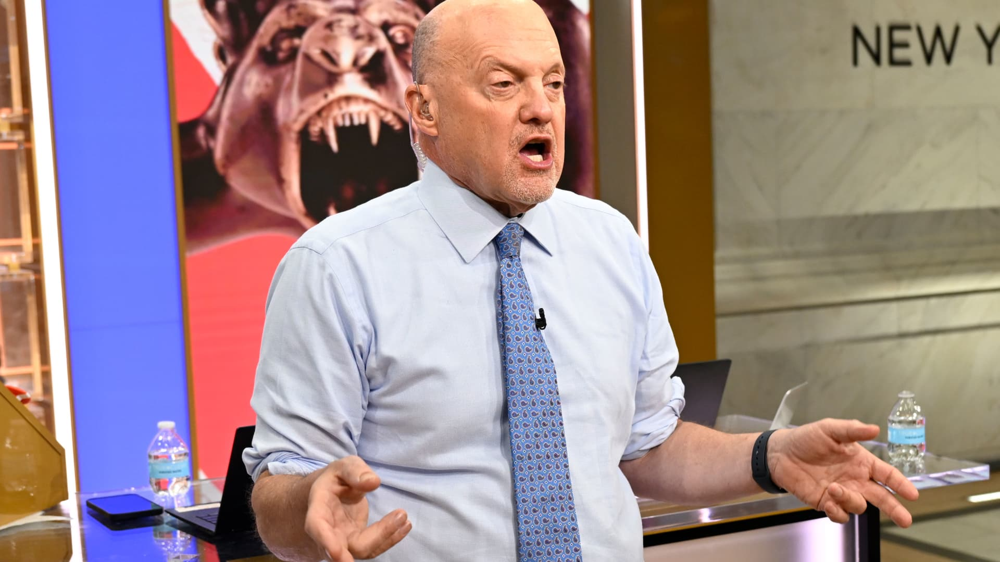

01
爱国者对海豚的直播报道：新英格兰能否在迈阿密重回正轨？
Patriots vs. Dolphins live coverage: Can New England get back on track in Miami?
关注当天所有爱国者的更新。
Stay tuned for all of the Patriots updates throughout the day.
原始报道 / Original source ↗DAILY NEWS · 每日新闻简报
Independent AI-assisted summaries of linked reports. Headlines, dates and source URLs are supplied by NewsAPI; summaries are not independent verification of full articles. Please read original reports for details.
Patriots vs. Dolphins live coverage: Can New England get back on track in Miami?
关注当天所有爱国者的更新。
Stay tuned for all of the Patriots updates throughout the day.
原始报道 / Original source ↗Federal Reserve keeps rates unchanged despite elevated inflation
美联储在努力将通胀率恢复到2%目标的过程中，维持了利率不变。
The Fed raised its benchmark rate last month for the first time in three years.
原始报道 / Original source ↗Boston Needs New Housing Standards
波士顿在住房标准方面的成功有限。
Boston has been far more successful at holding the line on costly housing mandates than making them work.
原始报道 / Original source ↗The youth vote in Massachusetts is struggling. Here’s why.
马萨诸塞州的选民登记人数远低于2022年的水平。
Massachusetts is among the states furthest behind its 2022 voter registration numbers.
原始报道 / Original source ↗布伦特原油与WTI美国原油最新市场行情。
Brent and WTI crude oil market quotations.
价格及更新时间以行情提供方为准。
Russian strikes plunge Ukrainian city into blackout as Zelenskyy warns of more missile attacks
俄罗斯的袭击导致第聂伯市大规模停电。
Russian strikes caused major power outages in Dnipro.
原始报道 / Original source ↗Here are 3 big things we're watching in the stock market in the week ahead
市场在接下来的日子里需要一些胜利。
The market could use a few victories in the days ahead.
原始报道 / Original source ↗
Cramer’s week ahead: Expect more volatility as tech earnings, midterms loom
投资者在等待苹果、AMD等公司的财报。
Investors await earnings from Apple, AMD, and other major companies.
原始报道 / Original source ↗Supreme Court hears religious freedom case centered on universal pre-K program
丹佛大主教区希望能够拒绝LGBTQ家庭进入接受州资助的天主教幼儿园。
The Archdiocese of Denver wants to be able to turn away LGBTQ families from Catholic preschools.
原始报道 / Original source ↗Trump thanks supporters for the memories in final campaign stops for 2026 midterms
特朗普在选举日临近时保持几乎每日的集会日程。
President Trump has maintained a near-daily rally schedule as Election Day draws closer.
原始报道 / Original source ↗Rivals in Israel Election Strike Tone of Triumph, but Outcome Is Far From Clear
内塔尼亚胡和反对派领导人都对领导以色列下届政府表示信心。
Both expressed confidence that they will lead Israel’s next government.
原始报道 / Original source ↗How to think about the midterms — and the political moment the country is in
民调显示民主党在中期选举中占优势，但结果可能需要一段时间才能揭晓。
Polls show Democrats with an advantage in the midterm election.
原始报道 / Original source ↗